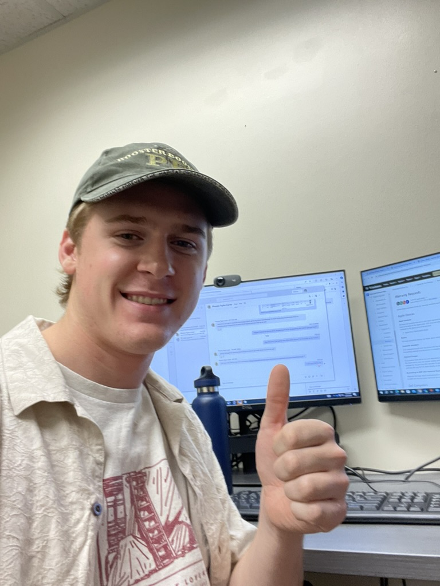

Student Employment · CU Boulder
Desktop Support Technician
Worked as a student lead and technician for the Office of Information Technology at CU Boulder. Consistently ranked among the top 15% of team members in cases resolved per week. Collaborated with the broader student team to ensure customer satisfaction and adherence to university SLAs. Assisted in onboarding and training new employees, delegated tasks to team members, and served as a go-to resource for complex tickets — building both my technical depth and my comfort working in a team-oriented service environment.